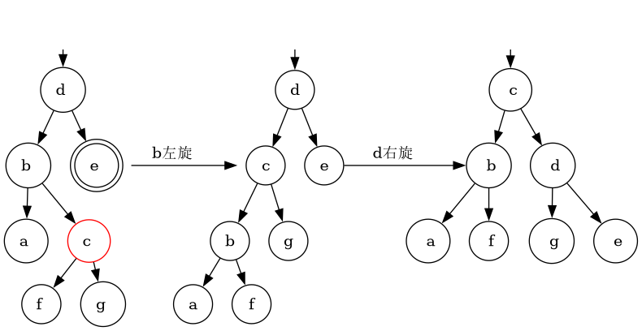

红黑树是一种二叉查找树，满足如下性质：
树中没有键相等的元素。
红黑树在插入和删除节点后可能不满足以上性质，这种情况下需要通过一些操作(及其组合)达到自平衡：
Figure 1: 二叉树旋转
可以看到旋转有如下性质：
本部分可以先简略看一下，结合后面插入删除的细节来理解。
插入或删除后可能导致红黑树性质不满足，就需要进行调整以恢复红黑树的性质。为了简化，我们保证调整前后一直满足性质3和5。
我们最终目的是恢复红黑树的性质，调整结构和染色是手段。旋转是调整结构的一种方式。
更大的调整单元意味着更多的节点和更复杂的结构，这使得颜色调整的空间也可以更大。但是单个调整单元要考虑的情况也复杂的多。 实际的插入和删除算法中，除了上面的旋转单元，只用到了下面这种调整单元(实际上相当于两次旋转)。
如果考虑满二叉树中三个连续节点(如bcd)的结构，除了上图中的两种情况，还有另一种(下图中间)。这种情况下叶子节点是afge。
Figure 2: 三个连续节点的结构变化
查找操作跟普通二叉查找树没有区别。
插入的过程为先通过查找找到要插入的位置，把新插入的节点作为当前节点，然后考虑如下情况：
以上插入各情况如图：
Figure 3: 插入2.1：递归处理
Figure 4: 插入2.2：策略1, 右旋即可
Figure 5: 插入2.3：策略1 无法达成
Figure 6: 插入2.3：两次旋转达成策略2
二叉查找树的删除需要先通过查找找到要删除的节点，要删除的节点(当前节点)分为三种情况：
上面情况3中的后继节点改为前继节点是一样的。
红黑树按照上述二叉查找树的算法删除节点后，可能会造成红黑树性质不满足，需要调整。
我们把情况1归为情况2的特殊情况, 认为叶子节点有一个左子节点，且为黑色。 所以只需要考虑情况2，用v代表要删除的节点，e代表v唯一的子节点。
v / e
删除v后为了保证性质5(黑高度不变)，我们把v的颜色加到e上，即现在e有两个颜色(红+黑/黑+黑)。
注意因为涵盖了情况1，所以e可能是NIL节点。在实现中，对于e，我们只需要处理它的颜色，需要区分处理它是否为NIL的情况。
下文中u和v从该状态继续处理(v已被删除，e位于v原来的位置，双颜色)。
本节只列举e为右孩子的情况，e为左孩子的情况与之对称，不再赘述。
需要平衡的情况都归结为双重黑节点，这时候如果直接去掉一重黑色，导致黑高度不相等。 删除导致节点减少，平衡时应该让当前节点的路径变长，所以我们找操作单元时， 让节点e位于操作单元的短边。 然后通过旋转操作让e的路径变长，以达到让多的一重黑色转移到其他节点上的目的。 需要考虑e的兄弟节点和侄子节点
下面图中橙色表示节点颜色任意。
Figure 7: 删除1.1：右旋达成策略1

Figure 8: 删除1.2：旋转两次达成策略2
Figure 9: 删除2：递归处理
Figure 10: 删除3：递归处理，但是只会递归常数次，相当与策略2